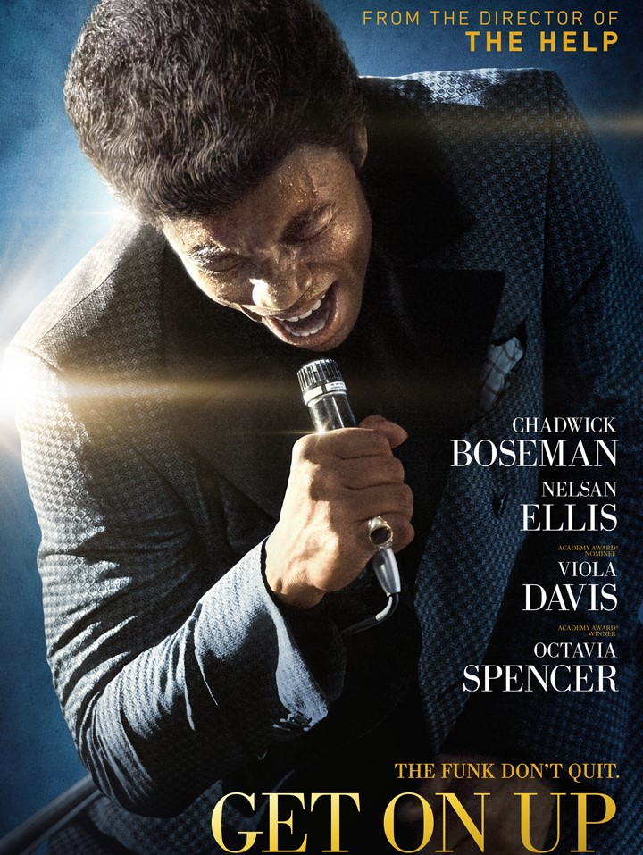
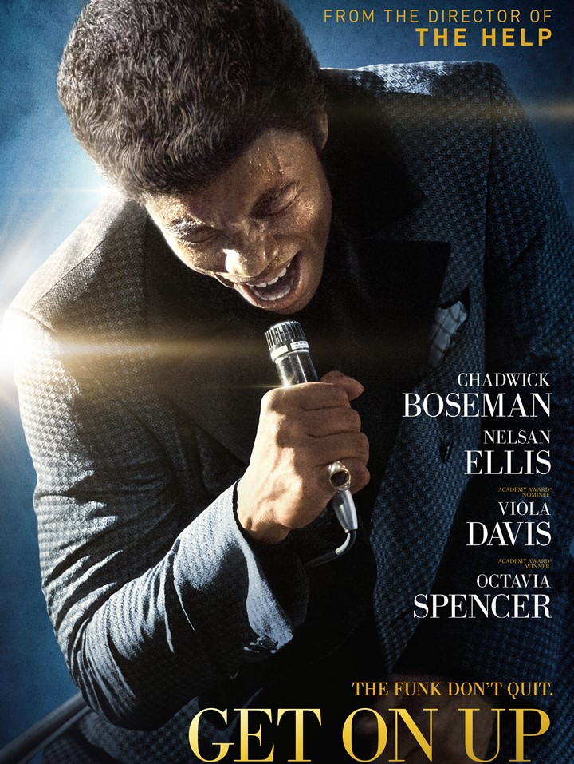

Chadwick Boseman
Chadwick Boseman Tribute Page
Chadwick Boseman was an American actor known for his portrayals of Jackie Robinson in '42' and James Brown in 'Get on Up.' He also played the superhero Black Panther in the Marvel Cinematic Universe. In 2020, he tragically passed away from colon cancer.
Early Life
Chadwick Aaron Boseman was born in 1976 in South Carolina and went on to attend Howard University in Washington, D.C., graduating with a Bachelor of Fine Arts in directing. (In 2018, he gave the commencement speech at Howard and received an honorary degree, Doctor of Humane Letters.) He then attended the British American Drama Academy in Oxford, England.
Career
Chadwick Boseman had early success as a stage actor, writer and director, before landing gigs on TV shows like Lincoln Heights. Boseman broke through with his big screen portrayals of two African American icons: baseball player Jackie Robinson in 42, and soul singer James Brown in Get on Up.
Brief Timeline of Film Career
42 (Sport/Drama, 2013)
Major League executive Branch Rickey drafts African American
Jackie Robinson as a player. Jackie has never taken too kindly to racism,
but now he is amidst even greater racist hostility.
80% Rotten Tomatoes.
Get on Up (Drama/Music, 2014)
James Brown struggles to overcome the challenges of poverty and misfortune
to emerge as one of the most successful musicians of his time.
80% Rotten Tomatoes.
Black Panther (action/Adventure, 2018)
After his father's death, T'Challa returns home to Wakanda to
inherit his throne. However, a powerful enemy related to his family
threatens to attack his nation.
96% Rotten Tomatoes.
21 Bridges (Thriller/Action, 2019)
Andre, an aggressive police officer, determines to put an end to
two war-veterans-turned-killers after they shoot down a few officers during a heist.
54% Rotten Tomatoes
Da 5 Bloods (War/Drama, 2020)
Four African American vets battle the forces of man and nature when
they return to Vietnam seeking the remains of their fallen squad leader and the gold
fortune he helped them hide.
92% Rotten Tomatoes

 

 x1 won
x1 won